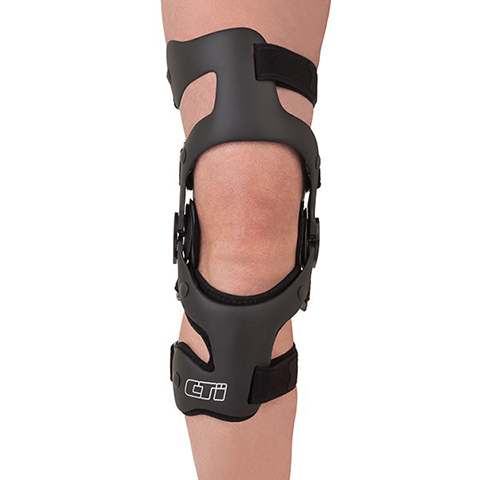
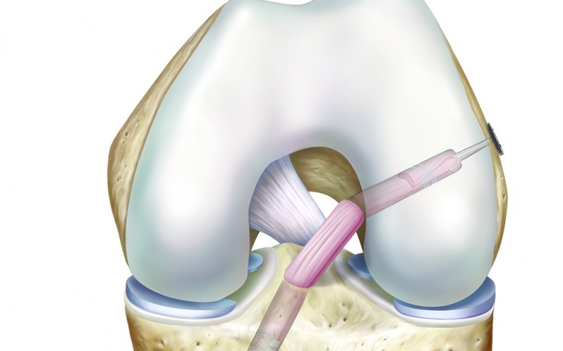

The anterior cruciate ligament (ACL) is one of several important ligaments that connects the tibia (shin bone) to the femur (thigh bone) across the knee. Its main functions are:
The ACL is particularly prone to injury during sporting activities that involve significant amounts of twisting and turning, such as skiing, football and netball. Whilst there is also a posterior cruciate ligament (PCL), this is damaged far less often and I will focus only on the ACL in this section.
Like all ligaments, the ACL acts as a firm soft tissue stabiliser of the joint. There are a number of nerves within the ACL which act as sensors that provide the brain with information about joint position sense (proprioception). When, for example, the ACL is stretched this information forms part of a “feedback mechanism” to activate certain protective muscle actions.
Occasionally, during rigorous sporting activity, the ligament can become over-stretched or completely torn. When the ACL is damaged as part of a twisting injury the patient may actually hear or feel a “popping” sensation. As the ligament has a blood supply, when torn the knee may fill with blood becoming swollen quite quickly. It is almost impossible to continue sporting activity after ACL rupture and urgent medical review is required.
When the ACL is damaged, the knee can feel acutely unstable and, occasionally, will cause the knee to give way/collapse.
Patients without an intact ACL can find it very difficult to return to any sports that require twisting and turning, such as, rugby, football, squash and skiing. However, other “in line” sports such as running, cycling or cross training are often possible, despite ACL deficiency.
As with all surgical conditions, diagnosis of damage to the anterior cruciate ligament is made by a combination of:
Once a definitive diagnosis has been made, the patient and surgeon can discuss the best way to proceed.
More often than not I find that the ACL is often injured as part of a combination of injuries in and around the knee. These include the medial collateral ligament (MCL) which may only be mildly but painfully stretched (grade 1) or fully rupture (grade 3), which paradoxically is less uncomfortable.
In addition to this combination the meniscal carriages can be damaged as part of the twisting mechanism.
First and foremost, it is vital to stress that, even in the presence of complete rupture of the ACL, the need for surgery is by no means inevitable. ( insert reference to my article here)
As mentioned previously, it is perfectly possible to pursue many sports without a functioning cruciate ligament. However, more rigorous, high-demand sports that involve a lot of “cutting”, twisting and pivoting are much more dependent on an intact, functioning ACL.
For most patients, the initial treatment centres around reducing the swelling within the knee whilst strengthening the muscles around the knee to act as secondary supports for stability. Specialist physiotherapists will also work on balance and “proprioceptive feedback” which aims to minimise the chance of the knee giving way during day-to-day activity. This I refer to as Pehabilitation as it comes even before the decision about the need for surgery .
Even if the decision is taken at a very early stage that a reconstruction procedure will be required the need to “Prehab” the knee back to a calmness without swelling , pain and stiffness is vital to a good surgical outcome. Having performed well over one thousand of these operations I have learned that to try to skip this process of calming things down and building muscle will simply result in an extended post operative “Rehab” .
In addition to any natural muscular stability thus achieved without surgery a specialised ACL stabilisation brace can offer substantial support during sports such as skiing and tennis. This brace is very different from the standard “hinge-type” braces often prescribed in the early stages of injury. The use of a specialised ‘ACL’ brace such as the CTi Edge Brace can provide additional temporary stability for an injured knee with or without ligament reconstructive surgery.

Surgical reconstruction of the anterior cruciate ligament has become an increasingly popular operation over the last decade.
Due to advances in surgical techniques, this has turned what was a major open operation to one that is now minimally invasive (via arthroscopic portals).

Like most surgical procedures, there are many ways of achieving ACL reconstruction. Most surgeons across the world use a similar technique to restore a ‘new’ ACL, but the choice of graft material varies widely. Each surgeon or surgical unit will have their own rationale for their technique/graft choice.
During subsequent consultations with the patient, I will discuss the surgical options available in terms of reconstruction and what I feel is the best technique to be employed in each individual case.
We will consider the following:
As indicated, there are a variety of different techniques available, but surgeons have their own preferences based on their own experience and results.
For example, in the United States of America, there is a general preference for using Allograft (whilst In the UK, this option is less popular and less available. A ‘hamstring’ graft is most commonly used in the UK.
ACL reconstruction involves undergoing a general anaesthetic and is now widely a day case procedure , unless performed in the afternoon when a one night stay may be recommended . The operation itself lasts for just over an hour and a tourniquet is applied to the leg during the procedure.
The operation is carried out under direct vision of the arthroscope (camera) inserted within the knee. A bony tunnels are drilled within the shin bone (tibia) and the thigh bone (femur) to allow the graft to be pulled across and held in place securely. This graft is, in effect, creating a ‘scaffold’ on which a new ligament can grow.
In the majority of cases, I use the hamstring technique (semitendinosus and gracilis) with an “Endobutton” (Smith & Nephew) to hold the graft in the femur with a “Bioabsorbable Biosure ” screw in the tibia.
In the immediate post-operative period, the priority is:
The post-operative programme is as follows:
The mainstay of the recovery after the operation is dependent on good quality outpatient physiotherapy. I encourage patients to see a physiotherapist close to their home or work so they can easily arrange regular sessions. As the wounds settle, the priority changes from the range of motion to muscle-strengthening and proprioceptive/balance work. I will usually recommend the use of physiotherapists with whom I have worked in the past and have a specialist interest in this area.
You will be very closely monitored after surgery by both myself and the physiotherapist to make sure that they are recovering well. The physiotherapist plays a very important role in the recovery process and we stay in close contact during this time to ensure the expected progress is being achieved.
Naturally, every patient recovers at a slightly different rate and there is no “normal” with respect to returning to sporting activity post-surgery.
I would, however, expect you to be able to cycle within the early months following surgery. Only after five months, will he/she be able to run.
The speed of recovery from this operation is limited by the ability of the body to integrate the graft material into the bony tunnels and to become fixed. This integration takes a minimum of ten weeks, but the graft itself is not “mature”/strong enough for participating in contact sports for at least nine months to one year.
Only once the body has created a “neoligament” from the hamstring “scaffold” is the knee strong enough to tolerate the twisting/pivoting forces of more rigorous sporting activity.